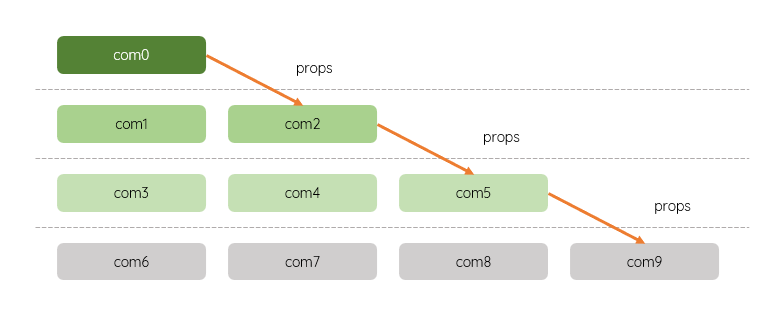

- Introduction
-
顶级组件 → 底层组件；中间可以经过多层组件
如果采用 defineProps()，即使中间组件不感兴趣，也要逐一向下传递 - props drilling

传统跨级通信
- 解决方案
-
采用
发布Provide - 插入Inject 的模式，避免属性透传 - For
passing data deeply through component trees without prop drilling
以值对的形式提供数据 - injection key / provided value
可以是任何值；可以传递普通静态数据，也可以传递响应式数据；可以传递简单数据，也可以传递对象 - value can be of any type
可以传递数据；还可以传递方法
响应式数据会 保持 响应式；传递的是响应式数据，不是响应式数据的值，不要加 value
只可以在 setup 顶级作用域使用，不可以在某个事件处理函数中使用 - provide() can only be used inside setup()
仅允许上向下传递|流转，不允许底层组件向顶级组件传递|反向流转
开发调试时，可以使用延时查看响应数据的变化
- 传递数据
-
1. 顶级组件：引入 provide 包；使用 provide 提供数据
可以使用只读 readonly() 限制|保护数据，使得子组件只能访问，不能修改 - cannot be mutated
import {provide, ref} from 'vue'
let name = 'glpla'
let msg = ref('hello')
provide('name', name)
provide('msg', readonly(msg))
2. 底层组件：引入 inject 包；使用 inject 接收数据
如果数据不存在或其它异常，可以指定默认值；默认值也可以由特定函数产生
import {inject} from 'vue'
// 如果 name 不存在，就初始为 glpla.github.io
let paraName = inject('name', 'glpla.github.io')
let paraMsg = inject('msg')
- 传递方法
-
底层组件可以使用顶层组件的方法修改顶层组件的数据；虽然有悖于数据流的单向原则，但是仍然遵循 谁的数据谁修改 的原则，即：用你提供的方法修改你的数据
1. 顶级组件使用 provide 提供已经定义好的方法 doGreeting
const doGreeting = () => {
refDate.value++
}
provide('doGreetingFn', doGreeting)
2. 底层组件使用 inject 接收传递的方法，并在事件处理函数 fn 中实现；fn 是普通点击事件
doGreet 接收传递来的方法，要执行，必须使用 ()
let doGreet = inject('doGreetingFn')
//直接执行
doGreet()
//在其它函数中执行
function fn() {
doGreet()
}
或直接在结构中使用传递的方法
<div @click="doGreet">直接使用</div>
- 名称冲突
- 顶层组件和底层组件的 provide 方法名称相同，底层组件会覆盖顶层组件的 provide 方法 - 进水楼台先得月
- 应优化设计，避免这种情况